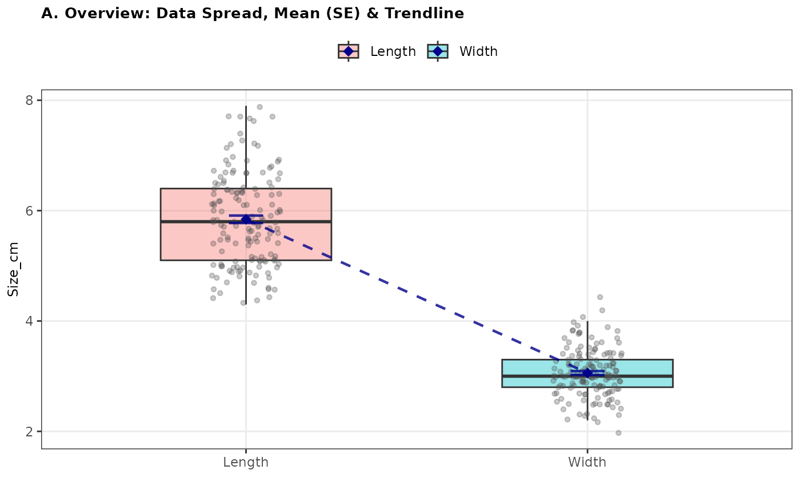
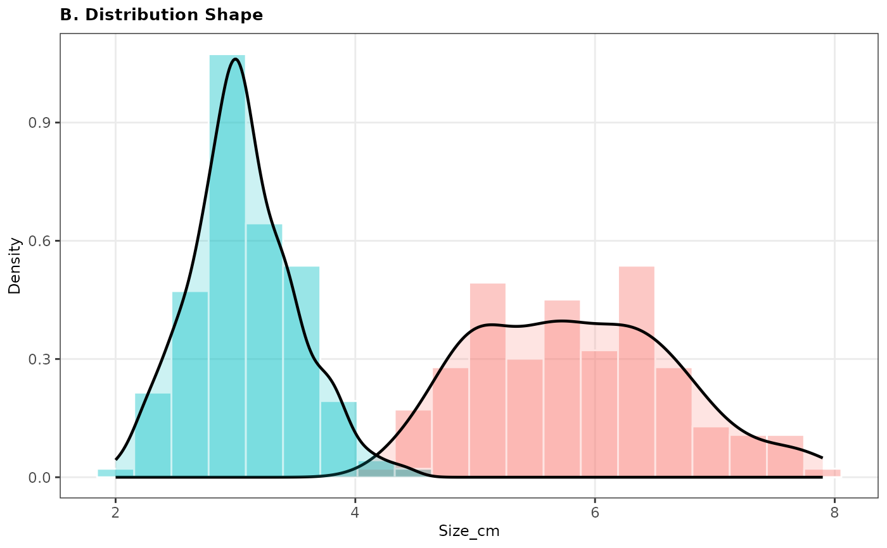
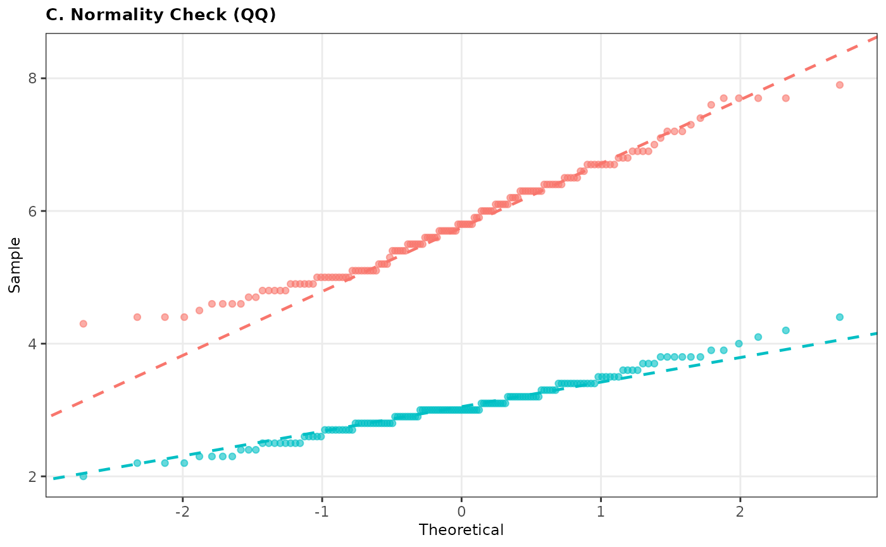
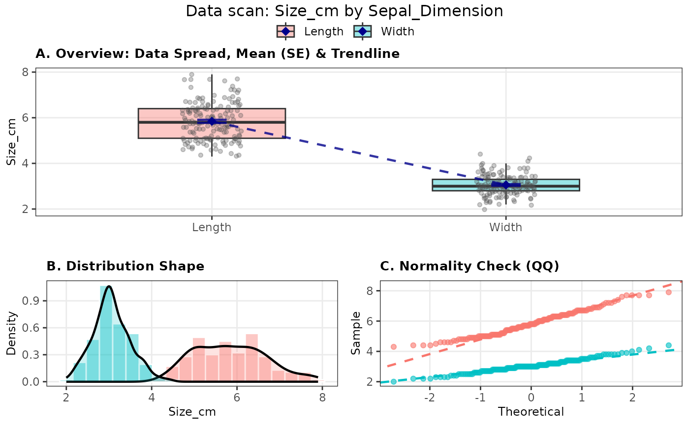

Transform 'Wide' (Excel) data to 'Long' (R) format
f_long.RdThis function converts "wide" data (e.g. Excel tables) into a "long" list format. This is the essential first step to prepare your data for analysis and plotting in R.
Usage
f_long(
data,
measure_columns = NULL,
keep_cols = NULL,
category_name = "name",
value_name = "value",
category_labels = NULL,
...
)Arguments
- data
The input data frame (e.g., from
read_excel).- measure_columns
(Optional) The columns containing your numeric measurements. These values are often the response variables, i.e. will end up on the Y-axis.
Use column names:
c("OD_t0", "OD_t1")Use column numbers:
2:5Use helpers:
starts_with("Measure")
If NULL (default), the function will pivot ALL columns except those in
keep_cols.- keep_cols
(Optional) The columns that identify your samples (IDs). E.g., "SampleID", "PatientID", "Treatment", "Student number". These are repeated for every measurement. *If left empty, all non-measured columns are kept.* Important: If
measure_columnsis NULL, you MUST specifykeep_cols.- category_name
Name for the new column containing the headers. Default is "name". Choose something logical like "Timepoints", "Genes", or "Condition".
- value_name
Name for the new column containing the numbers. Default is "value". Choose something logical like "Absorbance", "Ct_Value", or "Weight".
- category_labels
(Optional) A character vector of new, readable names for your categories, i.e. the measure_columns that you entered. Note: The order must match the order of
measure_columnsexactly. Useful for renaming "t0_raw" to "Start" instantly.- ...
Additional arguments passed to
tidyr::pivot_longer. E.g.,values_drop_na = TRUEto remove empty cells immediately.
Details
Research data in Excel or output from lab instruments often contains measurements side-by-side (in columns). Many R functions require measurements in a single column (rows). `f_long` performs this translation for you.
It performs three actions in one go: 1. Selects your measurement columns (`measure_columns`). 2. Keeps your important ID columns (`keep_cols`) and removes the rest. 3. (Optional) Renames cryptic column headers into readable labels (`category_labels`).
Note
The custom class and attributes (f_long_value, f_long_category)
are used by the plot and summary methods. Be aware that most
dplyr or tidyr operations (e.g., filter, mutate)
will silently strip these attributes. If that happens, use f_scan or
f_summary directly with explicit column names instead.
Examples
# --- Example 1: Using the 'iris' dataset ---
# Scenario: The iris dataset looks clean, but it is actually "Wide".
# It has 4 columns of measurements side-by-side.
# To compare Sepal Length vs Width in a plot, we must stack them.
head(iris)
#> Sepal.Length Sepal.Width Petal.Length Petal.Width Species
#> 1 5.1 3.5 1.4 0.2 setosa
#> 2 4.9 3.0 1.4 0.2 setosa
#> 3 4.7 3.2 1.3 0.2 setosa
#> 4 4.6 3.1 1.5 0.2 setosa
#> 5 5.0 3.6 1.4 0.2 setosa
#> 6 5.4 3.9 1.7 0.4 setosa
# Reshape: Combine Length and Width into one column and plot the data.
iris_long <- f_long(
data = iris,
measure_columns = c("Sepal.Length", "Sepal.Width"),
keep_cols = "Species",
category_name = "Sepal_Dimension", # Describes the grouping (What did we measure?)
value_name = "Size_cm", # Describes the value (What is the number?)
category_labels=c("Length", "Width") # New category labels
)
#> ---------------------------------------------------
#> rfriend SAFETY CHECK:
#> Please verify the order and names below.
#>
#> Column Name --> New Label
#> ---------------------------------------------------
#> Sepal.Length --> Length
#> Sepal.Width --> Width
#> ---------------------------------------------------
head(iris_long)
#> # A tibble: 6 × 3
#> Species Sepal_Dimension Size_cm
#> <fct> <fct> <dbl>
#> 1 setosa Length 5.1
#> 2 setosa Width 3.5
#> 3 setosa Length 4.9
#> 4 setosa Width 3
#> 5 setosa Length 4.7
#> 6 setosa Width 3.2
# Plot the data using f_scan
plot(iris_long)




# Make a f_summary table of iris_long
summary(iris_long)
#>
#> -----------------------------------------------------------------------------------------
#> Sepal_ Size_c Size_c Size_c Size_c Size_c Size_c Size_c Size_c Size_c
#> Dimens m m m m m m m m m
#> ion n mean sd se min Q1 median Q3 max
#> -------- -------- -------- -------- -------- -------- -------- -------- -------- --------
#> Length 150 5.84 0.83 0.07 4.30 5.10 5.80 6.40 7.90
#>
#> Width 150 3.06 0.44 0.04 2.00 2.80 3.00 3.30 4.40
#> -----------------------------------------------------------------------------------------
#>
# --- Example 2: Using the 'airquality' dataset ---
# Scenario: Pivot daily measurements of Wind and Temperature over time.
head(airquality)
#> Ozone Solar.R Wind Temp Month Day
#> 1 41 190 7.4 67 5 1
#> 2 36 118 8.0 72 5 2
#> 3 12 149 12.6 74 5 3
#> 4 18 313 11.5 62 5 4
#> 5 NA NA 14.3 56 5 5
#> 6 28 NA 14.9 66 5 6
weather_long <- f_long(
data = airquality,
measure_columns = c("Wind", "Temp"),
keep_cols = c("Month", "Day"),
category_name = "Climate_Parameter", # Descriptive name
value_name = "Reading_Value", # Generic name (since units differ: mph vs F)
values_drop_na = TRUE
)
head(weather_long)
#> # A tibble: 6 × 4
#> Month Day Climate_Parameter Reading_Value
#> <int> <int> <chr> <dbl>
#> 1 5 1 Wind 7.4
#> 2 5 1 Temp 67
#> 3 5 2 Wind 8
#> 4 5 2 Temp 72
#> 5 5 3 Wind 12.6
#> 6 5 3 Temp 74